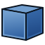
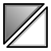

BIM Workbench/pt-br

Introdução
A  Bancada BIM provê um fluxo de trabalho de Modelo da Informação da Construção moderno no FreeCAD, com objetos totalmente parametrizados como, por exemplo, paredes, vigas, telhados, janelas, escadas, canos, e móveis. Ela é compatível com arquivos Industry Foundation Classes (IFC), e a produção de plantas 2D em combinação com a
Bancada BIM provê um fluxo de trabalho de Modelo da Informação da Construção moderno no FreeCAD, com objetos totalmente parametrizados como, por exemplo, paredes, vigas, telhados, janelas, escadas, canos, e móveis. Ela é compatível com arquivos Industry Foundation Classes (IFC), e a produção de plantas 2D em combinação com a  Bancada TechDraw.
Bancada TechDraw.
A Bancada BIM importa ferramentas da  Bancada Draft, para utilizar seus objetos 3d na contrução de objetos 3D paramétricos. Mas ela pode também usar formas sólidas criadas com outras bancadas como as
Bancada Draft, para utilizar seus objetos 3d na contrução de objetos 3D paramétricos. Mas ela pode também usar formas sólidas criadas com outras bancadas como as  Part e
Part e  PartDesign.
PartDesign.
Consulte o guia de migração para o FreeCAD BIM para obter uma visão geral rápida, caso você já utilize outro aplicativo BIM.
Os desenvolvedores das bancadas Draft e BIM também colaboram com a comunidade OSArch, cujo principal objetivo é melhorar o design de construção usando unicamente software livre.
{kind=link}
Começando
{kind=link}
Quando a Bancada BIM é iniciada pela primeira vez, um diálogo de boas-vindas é apresentado, apresentando um visão geral de como a bancada funciona, e permitindo que o usuário inicie um tutorial integrado. Esse diálogo também está disponível a partir do menu Ajuda. Quando a tela de boas-vindas é fechada ao clicar em OK, o diálogo de configuração BIM será mostrado, permitindo ao usuário atribuir rapidamente algumas preferências mais comuns referentes ao BIM do FreeCAD sem necessitar navegar nas Páginas de preferências do FreeCAD.
A ferramenta Configurar Projeto permite configurar rapidamente um projeto BIM ao inserir algumas informações básicas sobre ele. Em seguida, você pode, por exemplo, utilizar as diversas ferramentas de desenho 2D para esboçar linhas de referência e eixos e, depois, usar as ferramentas de modelagem 3D para criar automaticamente objetos BIM 3D a partir deles. Uma linha, por exemplo, pode se transformar em uma parede bastando selecioná-la e clicar no botão Parede.
Elementos construtivos comuns, como paredes ou pilares, são criados facilmente pressionando o botão apropriado na barra de ferramentas e clicando em pontos na Vista 3D. Eles podem ser movidos, rotacionados e editados após a criação. A maioria dos elementos BIM é criada no plano de trabalho atual; portanto, um fluxo de trabalho típico envolve definir primeiro o plano de trabalho e, em seguida, criar o elemento BIM. Elementos mais complexos podem ser criados desenhando-se primeiro elementos 2D e, depois, utilizando uma das ferramentas BIM para convertê-los no elemento desejado.
Elementos de projetos de construção podem ser organizados usando terrenos, edifícios e níveis, para reproduzir o que é comumente feito em outras aplicações BIM. No FreeCAD, no entanto, essas estruturas não são obrigatórias, e você é livre para organizar os elementos do seu modelo como achar melhor, por exemplo, usando grupos.
Desenhos 2D podem ser gerados a partir de um modelo para representar vistas de planta, corte ou elevação. Para gerar esse tipo de desenho, planos de corte são posicionados no modelo para indicar onde ele deve ser cortado ou visualizado. Uma vez que os planos de corte estão posicionados, dois métodos são possíveis:
- Criar vistas projetadas no documento usando vistas de forma, depois adicionar todas as anotações necessárias, como textos e cotas, e então colocar tudo isso em uma página. Essa é a maneira recomendada, pois oferece mais flexibilidade.
- Criar uma vista diretamente em uma página a partir do plano de corte. Nesse caso, todas as anotações 2D necessárias devem ser adicionadas ao plano de corte ou feitas diretamente na página. Esse método é menos flexível.
Por fim, tabelas de quantitativos podem ser criadas usando a ferramenta cronograma.
Se você está acostumado com outra aplicação BIM, confira nossa tabela de compatibilidade de aplicativos BIM para se orientar ao começar a usar o FreeCAD.

O tutorial integrado é uma maneira fácil de rapidamente se familiarizar com a bancada de trabalho BIM.
Ferramentas
A bancada de trabalho BIM reúne ferramentas de várias outras bancadas do FreeCAD, principalmente Draft e Part, reorganizadas de forma aproximada em categorias lógicas.
Além disso, se tais complementos estiverem instalados, ferramentas das bancadas Reinforcement (ferramentas extras para barras de armadura), Fasteners (parafusos e fixadores), Flamingo/Dodo (ferramentas para estruturas metálicas e tubulações) e Parts Library são incluídas automaticamente na bancada BIM.
A bancada de trabalho BIM também adiciona uma série de itens à Barra de Status do FreeCAD, bem como alguns itens de menu de contexto, acessíveis ao clicar com o botão direito na Vista 3D ou na Vista em Árvore.
A ordem das ferramentas corresponde ao menu da versão 26.3.
Desenho 2D
Objetos 2D são comumente usados como auxiliares de desenho, ou para traçar linhas de base e perfis para construir objetos BIM. Eles também podem ser usados para desenhar símbolos e anotações no seu modelo. Além dos esboços, que usam seu próprio sistema de coordenadas, os objetos 2D serão desenhados no plano de trabalho atual.
- Esboço: Cria um novo esboço e entra no modo de edição de esboço. Os esboços são objetos 2D avançados com suporte a restrições.
{kind=link}
 Linha: Cria uma linha reta.
Linha: Cria uma linha reta.
 Polilinha: Cria uma polilinha (também chamada de fio), uma sequência de vários segmentos de linha conectados.
Polilinha: Cria uma polilinha (também chamada de fio), uma sequência de vários segmentos de linha conectados.
 Retângulo: Cria um retângulo a partir de dois pontos.
Retângulo: Cria um retângulo a partir de dois pontos.
- Arc Tools:
 Arco: Cria um arco circular a partir de um centro, um raio, um ângulo inicial e um ângulo de abertura.
Arco: Cria um arco circular a partir de um centro, um raio, um ângulo inicial e um ângulo de abertura.
 Arco por 3 Pontos: Cria um arco circular a partir de três pontos que definem a sua circunferência.
Arco por 3 Pontos: Cria um arco circular a partir de três pontos que definem a sua circunferência.
 Círculo: Cria um círculo a partir de um centro e um raio.
Círculo: Cria um círculo a partir de um centro e um raio.
 Elipse: Cria uma elipse a partir de dois pontos que definem um retângulo no qual a elipse se ajustará.
Elipse: Cria uma elipse a partir de dois pontos que definem um retângulo no qual a elipse se ajustará.
 Polígono: Cria um polígono regular a partir de um centro e um raio.
Polígono: Cria um polígono regular a partir de um centro e um raio.
- Ferramentas de Spline:
 B-Spline: Cria uma curva B-spline a partir de vários pontos.
B-Spline: Cria uma curva B-spline a partir de vários pontos.
 Curva de Bézier: Cria uma curva de Bézier a partir de vários pontos.
Curva de Bézier: Cria uma curva de Bézier a partir de vários pontos.
 Curva Cúbica de Bézier: Cria uma curva de Bézier de terceiro grau.
Curva Cúbica de Bézier: Cria uma curva de Bézier de terceiro grau.
 Ponto: Cria um ponto simples.
Ponto: Cria um ponto simples.
 Arredondamento: Cria um arredondamento (canto arredondado) ou um chanfro (borda reta) entre duas Linhas Draft.
Arredondamento: Cria um arredondamento (canto arredondado) ou um chanfro (borda reta) entre duas Linhas Draft.
3D/BIM
Objetos 3D e BIM são os elementos do mundo real que comporão o seu projeto BIM.
 Terreno: Cria um terreno incluindo os objetos selecionados.
Terreno: Cria um terreno incluindo os objetos selecionados.
 Edifício: Cria um edifício incluindo os objetos selecionados.
Edifício: Cria um edifício incluindo os objetos selecionados.
 Piso: Cria um piso incluindo os objetos selecionados.
Piso: Cria um piso incluindo os objetos selecionados.
 Espaço: Cria um objeto de espaço.
Espaço: Cria um objeto de espaço.
 Parede: Cria uma parede do zero ou utilizando um objeto selecionado como base.
Parede: Cria uma parede do zero ou utilizando um objeto selecionado como base.
 Parede Cortina: Cria uma parede cortina do zero ou utilizando um objeto selecionado como base.
Parede Cortina: Cria uma parede cortina do zero ou utilizando um objeto selecionado como base.
 Pilar: Cria um elemento estrutural vertical em um ponto específico, utilizando opcionalmente um objeto selecionado como perfil.
Pilar: Cria um elemento estrutural vertical em um ponto específico, utilizando opcionalmente um objeto selecionado como perfil.
 Viga: Cria um elemento estrutural horizontal entre dois pontos, utilizando opcionalmente um objeto selecionado como perfil.
Viga: Cria um elemento estrutural horizontal entre dois pontos, utilizando opcionalmente um objeto selecionado como perfil.
 Laje: Cria um elemento estrutural plano através da extrusão de um objeto plano selecionado.
Laje: Cria um elemento estrutural plano através da extrusão de um objeto plano selecionado.
 Janela: Cria uma janela do zero ou utilizando um objeto selecionado como base.
Janela: Cria uma janela do zero ou utilizando um objeto selecionado como base.
 Revestimento: Cria um acabamento de superfície aplicado a uma face plana. introduced in 26.3
Revestimento: Cria um acabamento de superfície aplicado a uma face plana. introduced in 26.3
 Tubo: Cria um tubo.
Tubo: Cria um tubo.
 Conector: Cria uma conexão de canto ou em T entre 2 ou 3 tubos selecionados.
Conector: Cria uma conexão de canto ou em T entre 2 ou 3 tubos selecionados.
 Stairs: Cria um objeto escada.
Stairs: Cria um objeto escada.
 Telhado: Cria um telhado inclinado a partir de um contorno selecionado.
Telhado: Cria um telhado inclinado a partir de um contorno selecionado.
 Painel: Cria um objeto do tipo painel a partir de um objeto 2D selecionado.
Painel: Cria um objeto do tipo painel a partir de um objeto 2D selecionado.
 Estrutura: Cria um objeto de estrutura a partir de um layout selecionado.
Estrutura: Cria um objeto de estrutura a partir de um layout selecionado.
 Cerca: Cria um objeto de cerca a partir de um poste e de um caminho selecionados.
Cerca: Cria um objeto de cerca a partir de um poste e de um caminho selecionados.
 Treliça: Cria uma treliça a partir de uma linha selecionada ou do zero.
Treliça: Cria uma treliça a partir de uma linha selecionada ou do zero.
 Equipamento: Cria um objeto de equipamento ou mobiliário.
Equipamento: Cria um objeto de equipamento ou mobiliário.
- Ferramentas de Armadura:
- Estas ferramentas, exceto a primeira, só estão disponíveis se a Bancada de Trabalho de Armaduras tiver sido instalada.
 Armadura Personalizada: Cria uma barra de armadura personalizada em um elemento estrutural selecionado, utilizando um esboço.
Armadura Personalizada: Cria uma barra de armadura personalizada em um elemento estrutural selecionado, utilizando um esboço.
 Barra de Armadura Reta: Cria uma barra de armadura reta em um elemento estrutural selecionado.
Barra de Armadura Reta: Cria uma barra de armadura reta em um elemento estrutural selecionado.
 Barra de Armadura em Forma de U: Cria uma barra de armadura em forma de U em um elemento estrutural selecionado.
Barra de Armadura em Forma de U: Cria uma barra de armadura em forma de U em um elemento estrutural selecionado.
 Barra de Armadura em L: Cria uma barra de armadura em formato de L em um elemento estrutural selecionado.
Barra de Armadura em L: Cria uma barra de armadura em formato de L em um elemento estrutural selecionado.
 Estribo: Cria uma barra de armadura do tipo estribo em um elemento estrutural selecionado.
Estribo: Cria uma barra de armadura do tipo estribo em um elemento estrutural selecionado.
 Barra de Armadura Dobrada: Cria uma barra de armadura dobrada em um elemento estrutural selecionado.
Barra de Armadura Dobrada: Cria uma barra de armadura dobrada em um elemento estrutural selecionado.
 Armadura Helicoidal: Cria uma barra de armadura helicoidal em um elemento estrutural selecionado.
Armadura Helicoidal: Cria uma barra de armadura helicoidal em um elemento estrutural selecionado.
 Armadura de Pilar: Cria barras de armadura em um pilar selecionado.
Armadura de Pilar: Cria barras de armadura em um pilar selecionado.
 Armadura de Viga: Cria barras de armadura em uma viga selecionada.
Armadura de Viga: Cria barras de armadura em uma viga selecionada.
 Armadura de Laje: Cria barras de armadura em uma laje selecionada.
Armadura de Laje: Cria barras de armadura em uma laje selecionada.
 Armadura de Sapata: Cria barras de armadura em uma sapata selecionada.
Armadura de Sapata: Cria barras de armadura em uma sapata selecionada.
- Ferramentas 3D Genéricas:
- Essas ferramentas criam objetos 3D genéricos que podem ser transformados ou utilizados como componentes BIM.
 Perfil: Cria um perfil 2D paramétrico.
Perfil: Cria um perfil 2D paramétrico.
 Caixa: Cria uma caixa especificando suas dimensões graficamente.
Caixa: Cria uma caixa especificando suas dimensões graficamente.
 Construtor de Formas: Cria formas mais complexas a partir de várias primitivas geométricas.
Construtor de Formas: Cria formas mais complexas a partir de várias primitivas geométricas.
 Facebinder: cria um objeto de superfície a partir de faces selecionadas.
Facebinder: cria um objeto de superfície a partir de faces selecionadas.
 Biblioteca de Objetos: Insere um objeto de equipamento ou mobiliário. Requer o complemento Biblioteca de Peças.
Biblioteca de Objetos: Insere um objeto de equipamento ou mobiliário. Requer o complemento Biblioteca de Peças.
 Componente: Cria um componente Arch não paramétrico.
Componente: Cria um componente Arch não paramétrico.
 Referência Externa: Vincula objetos de outro arquivo do FreeCAD ao documento atual.
Referência Externa: Vincula objetos de outro arquivo do FreeCAD ao documento atual.
Anotação
Anotações são objetos de auxílio visual que podem ser inseridos no seu modelo. Elas podem ser usadas para exportar o modelo diretamente para um formato 2D, como DXF, ou reutilizadas ao criar vistas 2D do modelo com a Bancada de Trabalho TechDraw.
 Cota Alinhada: Cria uma cota alinhada com dois pontos ou uma aresta selecionada.
Cota Alinhada: Cria uma cota alinhada com dois pontos ou uma aresta selecionada.
 Cota Horizontal: Cria uma cota horizontal entre dois pontos ou a partir de uma aresta selecionada.
Cota Horizontal: Cria uma cota horizontal entre dois pontos ou a partir de uma aresta selecionada.
 Cota Vertical: Cria uma cota vertical entre dois pontos ou a partir de uma aresta selecionada.
Cota Vertical: Cria uma cota vertical entre dois pontos ou a partir de uma aresta selecionada.
 Texto: Cria um texto 2D em um documento ou em uma página do TechDraw.
Texto: Cria um texto 2D em um documento ou em uma página do TechDraw.
 Linha de chamada: Cria uma polilinha de 2 segmentos com uma seta na extremidade, para ser usada como linha de chamada em conjunto com um Texto.
Linha de chamada: Cria uma polilinha de 2 segmentos com uma seta na extremidade, para ser usada como linha de chamada em conjunto com um Texto.
 Rótulo: Cria um texto de múltiplas linhas com uma linha de chamada de dois segmentos e uma seta.
Rótulo: Cria um texto de múltiplas linhas com uma linha de chamada de dois segmentos e uma seta.
 Hachura: Cria hachuras nas faces planas de um objeto selecionado.
Hachura: Cria hachuras nas faces planas de um objeto selecionado.
- Ferramentas de Eixo:
 Eixo: Adiciona uma matriz de eixos em uma única direção.
Eixo: Adiciona uma matriz de eixos em uma única direção.
 Sistema de Eixos: Adiciona um sistema de eixos composto por vários eixos.
Sistema de Eixos: Adiciona um sistema de eixos composto por vários eixos.
 Grade: Adiciona um objeto do tipo grade.
Grade: Adiciona um objeto do tipo grade.
 Plano de Corte: Adiciona um objeto de plano de corte.
Plano de Corte: Adiciona um objeto de plano de corte.
- Criar vistas 2D:
 Desenho 2D: Cria um contêiner para armazenar projeções 2D.
Desenho 2D: Cria um contêiner para armazenar projeções 2D.
 Vista de Corte: Cria uma vista projetada em 2D a partir de um objeto selecionado, como um Plano de corte ou um Nível.
Vista de Corte: Cria uma vista projetada em 2D a partir de um objeto selecionado, como um Plano de corte ou um Nível.
 Corte de Seção: Cria uma vista de corte 2D a partir de um objeto selecionado, como um Plano de seção ou um Nível.
Corte de Seção: Cria uma vista de corte 2D a partir de um objeto selecionado, como um Plano de seção ou um Nível.
 Nova Página: Cria uma página do TechDraw a partir de um arquivo de modelo SVG.
Nova Página: Cria uma página do TechDraw a partir de um arquivo de modelo SVG.
 Nova Vista: Cria uma vista do(s) objeto(s) selecionado(s), como um Plano de corte ou um Grupo contendo os diferentes elementos de uma vista 2D.
Nova Vista: Cria uma vista do(s) objeto(s) selecionado(s), como um Plano de corte ou um Grupo contendo os diferentes elementos de uma vista 2D.
Snapping
Este menu contém as ferramentas Draft Snap, bem como as seguintes ferramentas:
- Plano de Trabalho Frontal: Posiciona o plano de trabalho no plano global XZ (frontal).
{kind=link}
 Plano de Trabalho Superior: Posiciona o plano de trabalho no plano XY global (solo).
Plano de Trabalho Superior: Posiciona o plano de trabalho no plano XY global (solo).
 Plano de Trabalho Lateral: Posiciona o plano de trabalho no plano YZ global (lateral).
Plano de Trabalho Lateral: Posiciona o plano de trabalho no plano YZ global (lateral).
 Plano de Trabalho: Define o plano de trabalho atual.
Plano de Trabalho: Define o plano de trabalho atual.
Modificar
 Mover: Move ou copia objetos selecionados de um ponto para outro.
Mover: Move ou copia objetos selecionados de um ponto para outro.
 Girar: Gira ou copia objetos selecionados em torno de um ponto central, segundo um determinado ângulo.
Girar: Gira ou copia objetos selecionados em torno de um ponto central, segundo um determinado ângulo.
 Escala: Redimensiona ou copia objetos selecionados em relação a um ponto base.
Escala: Redimensiona ou copia objetos selecionados em relação a um ponto base.
 Espelhar: Cria cópias espelhadas a partir de objetos selecionados.
Espelhar: Cria cópias espelhadas a partir de objetos selecionados.
- Ferramentas de Clonagem:
 Clonar: Clona e move objetos selecionados.
Clonar: Clona e move objetos selecionados.
- Criar vínculo: Vincula e move os objetos selecionados. introduced in 26.3
{kind=link}
 Desclonar: Torna um objeto clonado independente do seu objeto original
Desclonar: Torna um objeto clonado independente do seu objeto original
 Copiar: Copia objetos selecionados de um ponto para outro.
Copiar: Copia objetos selecionados de um ponto para outro.

Cópia Simples: Cria uma cópia não paramétrica de um objeto selecionado. Esta é a mesma ferramenta que a Part SimpleCopy.
{kind=link}
 Composto: Cria um composto a partir de objetos selecionados. Esta é a mesma ferramenta que a Part Compound.
Composto: Cria um composto a partir de objetos selecionados. Esta é a mesma ferramenta que a Part Compound.
- Ferramentas de Deslocamento:
 Deslocamento 2D: Cria um contorno paralelo a uma determinada distância do original, ou amplia/reduz uma face plana (versão paramétrica). Esta é a mesma ferramenta que a Part Offset2D.
Deslocamento 2D: Cria um contorno paralelo a uma determinada distância do original, ou amplia/reduz uma face plana (versão paramétrica). Esta é a mesma ferramenta que a Part Offset2D.
 Deslocamento: Desloca cada segmento de um objeto selecionado a uma determinada distância ou cria uma cópia deslocada do objeto selecionado.
Deslocamento: Desloca cada segmento de um objeto selecionado a uma determinada distância ou cria uma cópia deslocada do objeto selecionado.
 Trimex: Corta ou estende um objeto selecionado.
Trimex: Corta ou estende um objeto selecionado.
 Join: Une Draft Lines e Draft Wires em um único fio.
Join: Une Draft Lines e Draft Wires em um único fio.
 Dividir: Divide uma Linha Draft ou Polilinha Draft em um ponto ou aresta especificado(a).
Dividir: Divide uma Linha Draft ou Polilinha Draft em um ponto ou aresta especificado(a).
 Alongar: Alonga objetos movendo pontos selecionados.
Alongar: Alonga objetos movendo pontos selecionados.
 Draft para Sketch: Converte objetos Draft em Esboços do Sketcher e vice-versa.
Draft para Sketch: Converte objetos Draft em Esboços do Sketcher e vice-versa.
 Edit: puts selected objects in Draft Edit mode. In this mode the properties of objects can be edited graphically. introduced in 26.3
Edit: puts selected objects in Draft Edit mode. In this mode the properties of objects can be edited graphically. introduced in 26.3
 Promover: Promove os objetos selecionados.
Promover: Promove os objetos selecionados.
 Rebaixar: Rebaixa os objetos selecionados.
Rebaixar: Rebaixa os objetos selecionados.
 Adicionar Componente: Adiciona objetos a um componente.
Adicionar Componente: Adiciona objetos a um componente.
 Remover Componente: Subtrai ou remove objetos de um componente.
Remover Componente: Subtrai ou remove objetos de um componente.
- Ferramentas de Matriz:
 Matriz ao longo de um caminho: Cria uma matriz a partir de um objeto selecionado, posicionando cópias ao longo de um caminho.
Matriz ao longo de um caminho: Cria uma matriz a partir de um objeto selecionado, posicionando cópias ao longo de um caminho.
 Matriz Polar: Cria uma matriz a partir de um objeto selecionado, posicionando cópias ao longo de uma circunferência. Opcionalmente, pode criar uma matriz do tipo Link.
Matriz Polar: Cria uma matriz a partir de um objeto selecionado, posicionando cópias ao longo de uma circunferência. Opcionalmente, pode criar uma matriz do tipo Link.
 Matriz de Pontos: Cria uma matriz a partir de um objeto selecionado, posicionando cópias nos pontos de um conjunto de pontos.
Matriz de Pontos: Cria uma matriz a partir de um objeto selecionado, posicionando cópias nos pontos de um conjunto de pontos.
 Cortar com Plano: Corta um objeto de acordo com um plano.
Cortar com Plano: Corta um objeto de acordo com um plano.
 Extrusão: Extruda faces planas de um objeto. Esta é a mesma ferramenta que a Extrusão de Peça.
Extrusão: Extruda faces planas de um objeto. Esta é a mesma ferramenta que a Extrusão de Peça.
- Ferramentas Booleanas:
 União: Une dois objetos. Esta é a mesma ferramenta que a União de Peças.
União: Une dois objetos. Esta é a mesma ferramenta que a União de Peças.
{kind=link}
 Interseção: Extrai a parte comum de dois objetos. Esta é a mesma ferramenta que a Interseção de Partes.
Interseção: Extrai a parte comum de dois objetos. Esta é a mesma ferramenta que a Interseção de Partes.
Gerenciar
- Configuração BIM: Define algumas das preferências do FreeCAD mais comumente utilizadas para BIM.
{kind=link}
 Configurar Projeto: Permite criar alguns objetos básicos, como um terreno, uma edificação e eixos, mediante o preenchimento de informações básicas do projeto.
Configurar Projeto: Permite criar alguns objetos básicos, como um terreno, uma edificação e eixos, mediante o preenchimento de informações básicas do projeto.
 Gerenciar Portas e Janelas: Gerencie as portas e janelas do seu projeto.
Gerenciar Portas e Janelas: Gerencie as portas e janelas do seu projeto.
- Gerenciamento de IFC:
 Gerenciar Elementos IFC: Gerencie como os diferentes elementos do seu projeto serão exportados para IFC.
Gerenciar Elementos IFC: Gerencie como os diferentes elementos do seu projeto serão exportados para IFC.
 Gerenciar Quantidades IFC: Gerencie como as quantidades dos seus objetos são exportadas explicitamente para IFC
Gerenciar Quantidades IFC: Gerencie como as quantidades dos seus objetos são exportadas explicitamente para IFC
 Gerenciar Propriedades IFC: Gerencie as propriedades IFC associadas a cada um dos seus objetos.
Gerenciar Propriedades IFC: Gerencie as propriedades IFC associadas a cada um dos seus objetos.
 Gerenciar Classificação: Gerencie como os objetos e materiais do seu projeto se relacionam com sistemas de classificação, como o Uniclass.
Gerenciar Classificação: Gerencie como os objetos e materiais do seu projeto se relacionam com sistemas de classificação, como o Uniclass.
 Gerenciar Camadas: Gerencie as camadas do seu documento.
Gerenciar Camadas: Gerencie as camadas do seu documento.
 Material: Gerencia materiais ou multimateriais de objetos selecionados
Material: Gerencia materiais ou multimateriais de objetos selecionados
- Ferramentas de Relatório:
 BIM Report: Cria um novo Relatório BIM para consultar dados do modelo com SQL. introduzido na versão 26.3
BIM Report: Cria um novo Relatório BIM para consultar dados do modelo com SQL. introduzido na versão 26.3
 Tabela: Cria diferentes tipos de tabelas.
Tabela: Cria diferentes tipos de tabelas.
 Levantamento: Entra ou sai do modo de levantamento.
Levantamento: Entra ou sai do modo de levantamento.
 Verificações de Pré-exportação: Realize diversas verificações no seu modelo antes de exportá-lo para IFC.
Verificações de Pré-exportação: Realize diversas verificações no seu modelo antes de exportá-lo para IFC.
 Estilos de Anotação: Permite definir estilos que afetam as propriedades visuais de objetos do tipo anotação.
Estilos de Anotação: Permite definir estilos que afetam as propriedades visuais de objetos do tipo anotação.
Utilitários
 Mover para a Lixeira: Move os objetos selecionados para um grupo "Lixeira", que é criado caso necessário.
Mover para a Lixeira: Move os objetos selecionados para um grupo "Lixeira", que é criado caso necessário.
 Vista do Plano de Trabalho: Posiciona a câmera de frente para o plano de trabalho atual
Vista do Plano de Trabalho: Posiciona a câmera de frente para o plano de trabalho atual
 Selecionar Grupo: Seleciona o conteúdo de Grupos Std ou objetos do Arch que funcionam como grupos.
Selecionar Grupo: Seleciona o conteúdo de Grupos Std ou objetos do Arch que funcionam como grupos.
 Set Slope: Inclinações selecionadas Draft Lines ou Draft Wires aumentando ou diminuindo a coordenada Z de todos os pontos após o primeiro.
Set Slope: Inclinações selecionadas Draft Lines ou Draft Wires aumentando ou diminuindo a coordenada Z de todos os pontos após o primeiro.
 Proxy de Plano de Trabalho: Cria um proxy de plano de trabalho para salvar o plano de trabalho do Draft atual.
Proxy de Plano de Trabalho: Cria um proxy de plano de trabalho para salvar o plano de trabalho do Draft atual.
 Adicionar ao Grupo de Construção: Move objetos para o grupo de construção do Draft.
Adicionar ao Grupo de Construção: Move objetos para o grupo de construção do Draft.
 Dividir Malha: Divide uma malha selecionada em componentes separados.
Dividir Malha: Divide uma malha selecionada em componentes separados.
 Malha para Forma: Converte uma malha em uma forma, unificando faces coplanares.
Malha para Forma: Converte uma malha em uma forma, unificando faces coplanares.
 Selecionar Malhas Não-Manifold: Seleciona todas as malhas não-manifold da seleção atual ou do documento.
Selecionar Malhas Não-Manifold: Seleciona todas as malhas não-manifold da seleção atual ou do documento.
 Remover forma do BIM: Torna o objeto Arch baseado em forma cúbica totalmente paramétrico.
Remover forma do BIM: Torna o objeto Arch baseado em forma cúbica totalmente paramétrico.
 Fechar Furos: Fecha furos em um objeto baseado em forma selecionado.
Fechar Furos: Fecha furos em um objeto baseado em forma selecionado.
 Unir Paredes: Unir paredes.
Unir Paredes: Unir paredes.
 Verificar: Verifica se os objetos selecionados são sólidos e não contêm defeitos.
Verificar: Verifica se os objetos selecionados são sólidos e não contêm defeitos.
 Alternar sinalizador IFC B-Rep: Força um objeto selecionado a ser exportado como um IfcFacetedBrep.
Alternar sinalizador IFC B-Rep: Força um objeto selecionado a ser exportado como um IfcFacetedBrep.
 Alternar Subcomponentes: Mostra ou oculta os subcomponentes de um objeto Arch.
Alternar Subcomponentes: Mostra ou oculta os subcomponentes de um objeto Arch.
 IFC Shape Diff: Mostra uma diferença visual entre dois arquivos IFC
IFC Shape Diff: Mostra uma diferença visual entre dois arquivos IFC
 IFC Explorer: Abre uma ferramenta para explorar a estrutura de um arquivo IFC antes da importação.
IFC Explorer: Abre uma ferramenta para explorar a estrutura de um arquivo IFC antes da importação.
 Nova Planilha IFC: Esta ferramenta cria uma planilha para armazenar propriedades IFC de um objeto.
Nova Planilha IFC: Esta ferramenta cria uma planilha para armazenar propriedades IFC de um objeto.
 Plano de Imagem: Insere um plano de imagem no documento.
Plano de Imagem: Insere um plano de imagem no documento.
 Reconectar Fiação: Recria fios a partir das arestas de objetos selecionados.
Reconectar Fiação: Recria fios a partir das arestas de objetos selecionados.
 Glue: Une formas selecionadas em uma única forma composta não paramétrica.
Glue: Une formas selecionadas em uma única forma composta não paramétrica.
 Re-extrudir: Recria uma extrusão a partir de uma forma que perdeu sua extrusão paramétrica, mediante a seleção de uma face de base.
Re-extrudir: Recria uma extrusão a partir de uma forma que perdeu sua extrusão paramétrica, mediante a seleção de uma face de base.
- Ferramentas do Painel:
- Painel: Cria um objeto do tipo painel a partir de um objeto 2D selecionado.
 Corte de Painel: Cria uma vista de corte 2D a partir de um painel.
Corte de Painel: Cria uma vista de corte 2D a partir de um painel.
 Folha de Painéis: Cria uma folha de corte 2D contendo cortes de painéis ou outros objetos 2D.
Folha de Painéis: Cria uma folha de corte 2D contendo cortes de painéis ou outros objetos 2D.
 Nest: Permite aninhar vários objetos planos dentro de uma forma de contêiner.
Nest: Permite aninhar vários objetos planos dentro de uma forma de contêiner.
- Ferramentas de Estrutura:
 Estrutura: Cria um elemento estrutural do zero ou utilizando um objeto selecionado como base.
Estrutura: Cria um elemento estrutural do zero ou utilizando um objeto selecionado como base.
 Sistema Estrutural: Cria um sistema estrutural distribuindo uma estrutura ao longo de sistemas de eixos.
Sistema Estrutural: Cria um sistema estrutural distribuindo uma estrutura ao longo de sistemas de eixos.
- Múltiplas Estruturas: Cria vários elementos de estrutura a partir de um objeto base, usando arestas selecionadas como caminhos de extrusão.
{kind=link}
 Projeto IFC: Cria um projeto IFC incluindo os objetos selecionados.
Projeto IFC: Cria um projeto IFC incluindo os objetos selecionados.
 Comparação de Arquivos IFC: Mostra as alterações atuais não salvas no arquivo IFC.
Comparação de Arquivos IFC: Mostra as alterações atuais não salvas no arquivo IFC.
 IFC Expand: Expande os elementos filhos dos objetos selecionados ou do documento.
IFC Expand: Expande os elementos filhos dos objetos selecionados ou do documento.
 Converter para Projeto IFC: Converte os objetos selecionados em uma estrutura de projeto IFC.
Converter para Projeto IFC: Converte os objetos selecionados em uma estrutura de projeto IFC.
 Atualização do IfcOpenShell: Atualiza as bibliotecas IfcOpenShell incorporadas utilizadas pelas ferramentas NativeIFC.
Atualização do IfcOpenShell: Atualiza as bibliotecas IfcOpenShell incorporadas utilizadas pelas ferramentas NativeIFC.
- Um conjunto de ferramentas que movem, rotacionam ou alteram a altura de objetos selecionados de forma incremental.
- Interruptor de Ajuste Fino
- Mover levemente para cima
- Mover levemente para baixo
- Mover levemente para a esquerda
- Deslocar levemente para a direita
- Ajuste fino: Girar à esquerda
- Ajuste fino: Girar para a direita
- Nudge Extend
- Ajuste de Redução
Barra de status
A barra de status contém alguns botões que permitem alterar facilmente diferentes estados:
 Alternar painéis de vistas BIM: Mostra ou oculta o painel Vistas BIM.
Alternar painéis de vistas BIM: Mostra ou oculta o painel Vistas BIM.

Alternar fundo da Vista 3D entre simples e gradiente: Alterna entre os modos de fundo com gradiente vertical, gradiente radial e cor sólida. Isso pode ser usado para alternar entre um fundo escuro para modelagem e um fundo branco para desenho 2D.
{kind=link}
 Bloquear IFC: Ativa/desativa o modo IFC estrito.
Bloquear IFC: Ativa/desativa o modo IFC estrito.
Menu de contexto da visualização em árvore
TBD
Menu de contexto da visualização 3D
TBD
Ferramentas obsoletas
 Arch 3Views: Cria vistas de topo, frontal e lateral a partir de uma malha. Não disponível na 1.0 and above.
Arch 3Views: Cria vistas de topo, frontal e lateral a partir de uma malha. Não disponível na 1.0 and above.
 Arch BuildingPart: Cria uma parte de edifício incluindo os objetos selecionados. Não disponível na 1.0 and above. Use Arch Floor em vez disso.
Arch BuildingPart: Cria uma parte de edifício incluindo os objetos selecionados. Não disponível na 1.0 and above. Use Arch Floor em vez disso.
 Arch CloneComponent: Cria Componentes Arch que são clones de objetos Arch selecionados. Não disponível na versão 1.0 and above. Use Draft Clone em vez disso.
Arch CloneComponent: Cria Componentes Arch que são clones de objetos Arch selecionados. Não disponível na versão 1.0 and above. Use Draft Clone em vez disso.
 Arch CutLine: Corta um objeto ao longo de uma linha. Não disponível na versão 1.0 and above. Utilize Arch CutPlane em seu lugar.
Arch CutLine: Corta um objeto ao longo de uma linha. Não disponível na versão 1.0 and above. Utilize Arch CutPlane em seu lugar.
 Arch MultiMaterial: Cria um multimaterial e o atribui aos objetos selecionados, se houver. Não disponível na 1.0 and above. Use BIM Material em vez disso.
Arch MultiMaterial: Cria um multimaterial e o atribui aos objetos selecionados, se houver. Não disponível na 1.0 and above. Use BIM Material em vez disso.
 Projeto Arch: Cria um projeto incluindo os objetos selecionados. Não disponível na versão 1.0 and above. Use Projeto BIM em vez disso.
Projeto Arch: Cria um projeto incluindo os objetos selecionados. Não disponível na versão 1.0 and above. Use Projeto BIM em vez disso.
 Arch SetMaterial: Cria um material e o atribui aos objetos selecionados, se houver. Não disponível na 1.0 and above. Use BIM Material em vez disso.
Arch SetMaterial: Cria um material e o atribui aos objetos selecionados, se houver. Não disponível na 1.0 and above. Use BIM Material em vez disso.
 Alternar Painéis Inferiores: Mostra ou oculta as janelas de saída (a Visualização de Relatório e o Console Python). Não disponível na 26.3 and above. Use Std ToggleBottomPanels em vez disso.
Alternar Painéis Inferiores: Mostra ou oculta as janelas de saída (a Visualização de Relatório e o Console Python). Não disponível na 26.3 and above. Use Std ToggleBottomPanels em vez disso.
Preferências
 Preferências: Preferências gerais para a Bancada de Trabalho BIM.
Preferências: Preferências gerais para a Bancada de Trabalho BIM.- Ajuste fino: Parâmetros adicionais para ajustar o comportamento do BIM.
Trabalhando com IFC
A bancada de trabalho BIM funciona nativamente com arquivos Industry Foundation Classes (IFC). "Nativo" significa que não há mais conversão entre o conteúdo IFC e o FreeCAD: o conteúdo IFC é renderizado diretamente no FreeCAD, e qualquer alteração afeta diretamente o conteúdo IFC. Leia mais em Native IFC.
O suporte nativo a IFC requer o IfcOpenShell. Se ele não estiver disponível, o FreeCAD informa que o suporte a IFC está desativado, mas as outras ferramentas BIM permanecem disponíveis. Utilize a ferramenta IfcOpenShell Update para instalar ou atualizar essa dependência.
Se você não pretende trabalhar com outras pessoas e não precisa do IFC, ainda pode utilizar as ferramentas da bancada de trabalho BIM e simplesmente ignorar tudo o que estiver relacionado ao IFC. Você ainda poderá exportar seu modelo para IFC a qualquer momento.
O antigo importador Arch IFC está desativado por padrão no FreeCAD, mas ainda está disponível via Python.
Há também um Tutorial de IFC Nativo específico que explica os conceitos mais detalhadamente.
Formatos de arquivo
- IFC: Industry Foundation Classes
- DAE: Formato de malha Collada
- OBJ: Formato de malha OBJ (apenas exportação)
- JSON: Formato JavaScript Object Notation (apenas exportação)
- 3DS: Formato 3DS (apenas importação)
- SHP: Shapefiles GIS (apenas importação)
API
O módulo Arch pode ser utilizado em scripts Python e macros por meio das funções da API Python do Arch.
Tutoriais e aprendizado
- Migrando do Revit para o FreeCAD
- Tutoriais de Arquitetura e BIM nesta wiki
- Série de vídeos "BIM with FreeCAD" de Yorik
- Série de vídeos "FreeCAD tutorials" de Regis
- Série de vídeos "Quinta Monroy" de Regis
- Canal do YouTube "HRCompacta" (a maior parte do conteúdo está em português)
- Canal do YouTube "FreeCADBIM" (a maior parte do conteúdo está em português)
- Canal do YouTube "FCB Lounge" dedicado a conteúdo sobre BIM e desenho técnico
Arquivos de exemplo
- O FreeCAD disponibiliza um arquivo de exemplo BIM na Página Inicial.
- Mais arquivos de exemplo BIM estão disponíveis em https://github.com/yorikvanhavre/FreeCAD-BIM-examples. Dentro do FreeCAD, utilize o menu Ajuda → Exemplos BIM.
- A Wiki da OSArch (OpenSource Architecture) disponibiliza exemplos BIM do FreeCAD criados por diversos autores: https://wiki.osarch.org/index.php?title=FreeCAD/Architecture_3D_models_created_in_FreeCAD.
- 2D Drafting: Sketch, Line, Polyline, Rectangle, Arc, Arc From 3 Points, Circle, Ellipse, Polygon, B-Spline, Bézier Curve, Cubic Bézier Curve, Point, Fillet
- 3D/BIM: Site, Building, Level, Space, Wall, Curtain Wall, Column, Beam, Slab, Door, Window, Covering, Pipe, Connector, Stairs, Roof, Panel, Frame, Fence, Truss, Equipment
- Reinforcement Tools: Custom Rebar, Straight Rebar, U-Shape Rebar, L-Shape Rebar, Stirrup, Bent-Shape Rebar, Helical Rebar, Column Reinforcement, Beam Reinforcement, Slab Reinforcement, Footing Reinforcement
- Generic 3D Tools: Profile, Box, Shape Builder, Facebinder, Objects Library, Component, External Reference
- Annotation: Aligned Dimension, Horizontal Dimension, Vertical Dimension, Text, Leader, Label, Hatch, Axis, Axis System, Grid, Section Plane, 2D Drawing, Section View, Section Cut, New Page, New View
- Snapping: Snap Lock, Snap Endpoint, Snap Midpoint, Snap Center, Snap Angle, Snap Intersection, Snap Perpendicular, Snap Extension, Snap Parallel, Snap Special, Snap Near, Snap Ortho, Snap Grid, Snap Working Plane, Snap Dimensions, Toggle Grid, Working Plane Front, Working Plane Top, Working Plane Side, Working Plane
- Modify: Move, Rotate, Scale, Mirror, Clone, Make Link, Copy, Simple Copy, Compound, 2D Offset, Offset, Trimex, Join, Split, Stretch, Draft to Sketch, Upgrade, Downgrade, Add Component, Remove Component, Array, Path Array, Polar Array, Point Array, Cut With Plane, Extrude, Union, Difference, Intersection
- Manage: BIM Setup, Setup Project, Manage Doors and Windows, Manage IFC Elements, Manage IFC Quantities, Manage IFC Properties, Manage Classification, Manage Layers, Material, BIM Report, Schedule, Preflight Checks, Annotation Styles
- Utils: Move to Trash, Working Plane View, Select Group, Set Slope, Working Plane Proxy, Add to Construction Group, Split Mesh, Mesh to Shape, Select Non-Manifold Meshes, Remove Shape From BIM, Close Holes, Merge Walls, Check, Toggle IFC B-Rep Flag, Toggle Subcomponents, Survey, IFC Diff, IFC Explorer, New IFC Spreadsheet, Image Plane, Unclone, Rewire, Glue, Re-Extrude
- Panel Tools: Panel, Panel Cut, Panel Sheet, Nest
- Structure Tools: Structure, Structural System, Multiple Structures
- IFC Tools: IFC Project, IFC Diff, IFC Expand, Convert to IFC Project, IfcOpenShell Update
- Nudge: Nudge Switch, Nudge Up, Nudge Down, Nudge Left, Nudge Right, Nudge Rotate Left, Nudge Rotate Right, Nudge Extend, Nudge Shrink
- Additional: Preferences, Fine tuning, Import Export Preferences, IFC, DAE, OBJ, JSON, 3DS, SHP
- Getting started
- Installation: Download, Windows, Linux, Mac, Additional components, Docker, AppImage, Ubuntu Snap
- Basics: About FreeCAD, Interface, Mouse navigation, Selection methods, Object name, Preferences, Workbenches, Document structure, Properties, Help FreeCAD, Donate
- Help: Tutorials, Video tutorials
- Workbenches: Std Base, Assembly, BIM, CAM, Draft, FEM, Inspection, Material, Mesh, OpenSCAD, Part, PartDesign, Points, Reverse Engineering, Robot, Sketcher, Spreadsheet, Surface, TechDraw, Test Framework
- Hubs: User hub, Power users hub, Developer hub